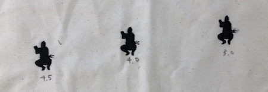
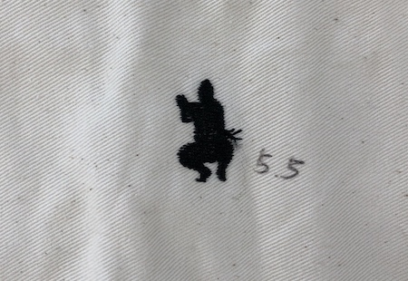

結果
想像していた以上に時間はかかったが、綺麗に縫うことができた。
またイラストレーターで描いた色とは違った色になってしまった。
学び
授業でやる前に個人的に刺繍ミシンを予約して、利用してみた。
その時はミシンの調子があまり良くなく度々エラーを起こしていた。
エラーの原因は２つあって、１つ目は下糸が上手く出てこない。
２つ目は上糸の張り具合が強すぎてスムーズに出てこない。
この２つを改善するのに苦戦したが、技官さんが助けてくれたので
乗り越えることができた。１つ目の改善方法は、下糸のボビンの巻き方を
確認すること。２つ目の改善方法は、上糸の張りの調節を弱めること。
また縫う糸の色は、刺繍ミシン方で変更できることがわかった。
応用
２回目の予約をした。今回は小さいものの刺繍と糸密度の変更に挑戦した。
大きさは３cm程度で、糸密度を[4.0][4.5][5][5.5]の４つに変えて刺繍した。
結果からいうと３cm程度の大きさでも綺麗に縫うことができた。
また糸密度は[4.5]が一番綺麗になった。
大きさと形によって糸密度の方を上手に変えてあげると綺麗なものに仕上がるのでは
ないだろうか。また糸密度順に並べ、数値も刺繍で縫ったら分かり易かったかもしれない。

